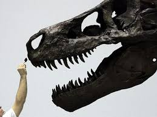
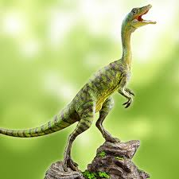
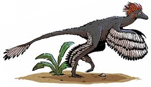
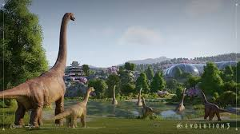
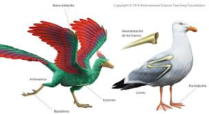
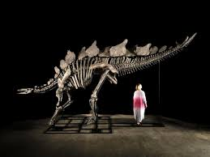
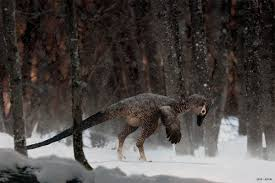
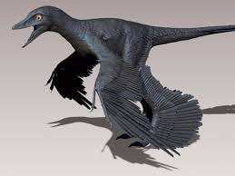

¿Sabias estos datos?
Datos Curiosos sobre los Dinosaurios

El Tyrannosaurus rex tenía una mordida tan poderosa que podía romper huesos con facilidad.

Algunos dinosaurios eran tan pequeños como una gallina, por ejemplo el Compsognathus.

Varios dinosaurios carnívoros como el Velociraptor tenían plumas, que les ayudaban a equilibrarse y a mantenerse abrigados.

El Brachiosaurus podía llegar a medir más de 25 metros de largo, ¡como un edificio de 8 pisos!

Las aves modernas son descendientes directos de los dinosaurios.

El Stegosaurus tenía un cerebro muy pequeño para su tamaño, apenas del tamaño de una nuez.

El Velociraptor era mucho más pequeño de lo que muestran las películas: no más grande que un perro.

Algunos dinosaurios, como el Troodon y el Edmontosaurus, vivieron en regiones polares y tenían plumas o adaptaciones para sobrevivir en climas fríos.

El Triceratops usaba sus cuernos no solo para defenderse, sino también para atraer pareja.

El Microraptor, un pequeño dinosaurio del tamaño de un cuervo, tenía plumas negras con reflejos azul metálico, lo que sugiere que las usaba para atraer pareja o comunicarse con otros de su especie.